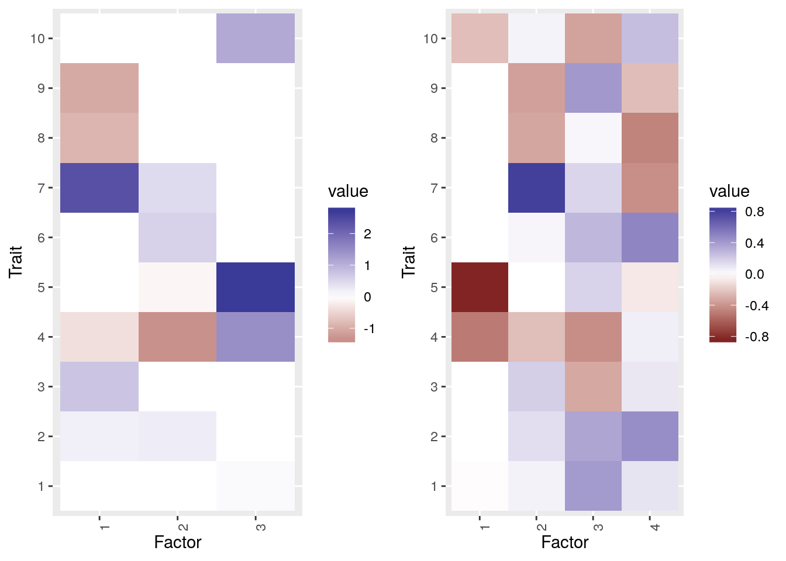
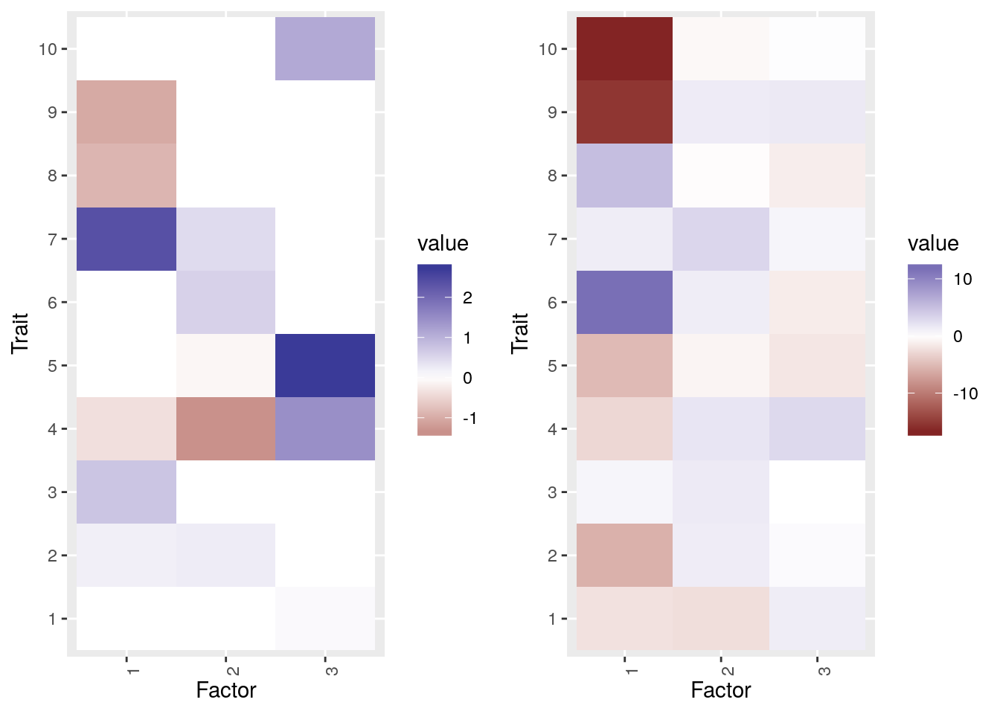
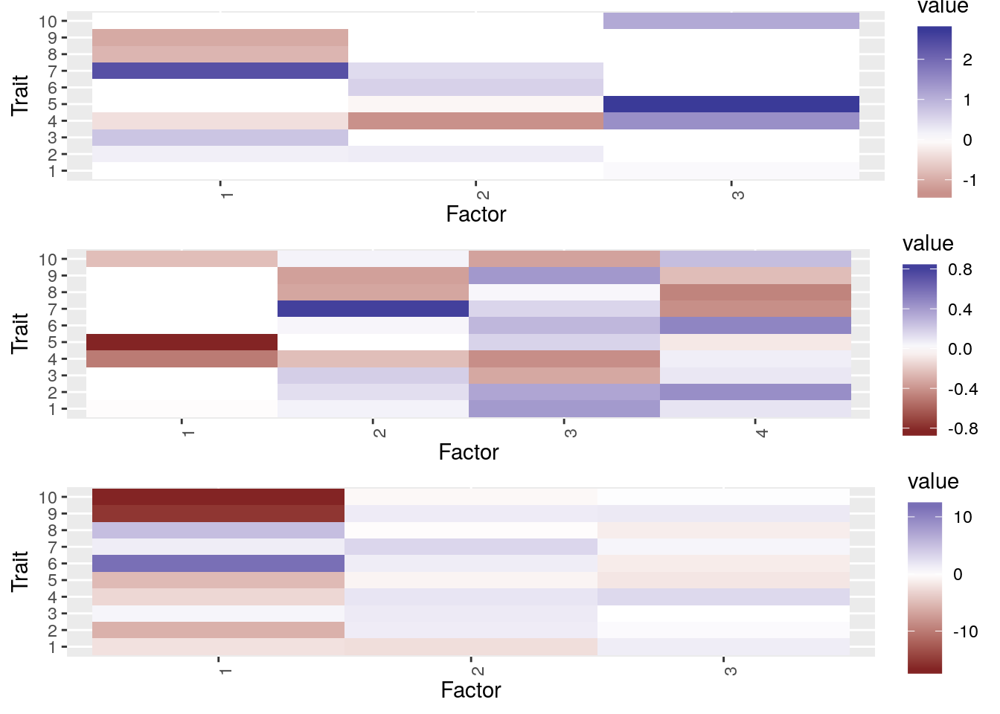
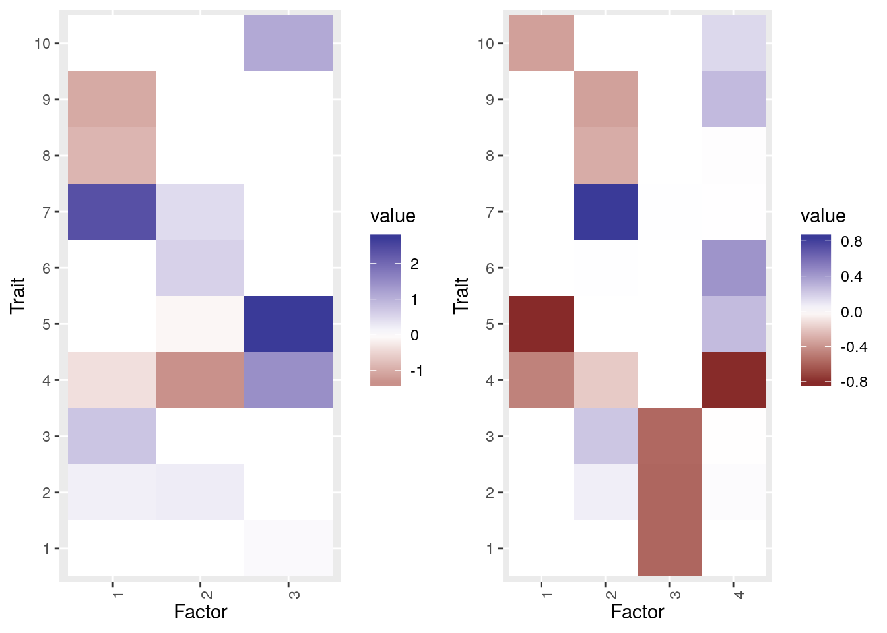
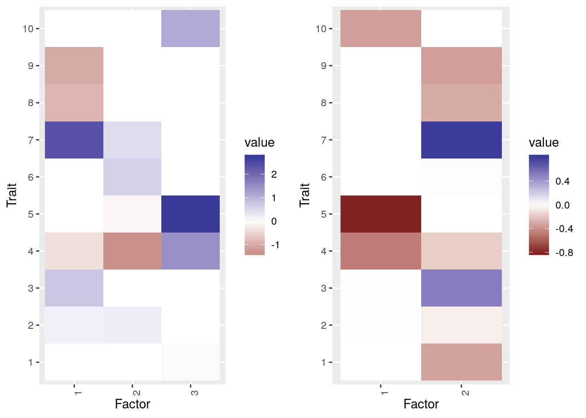
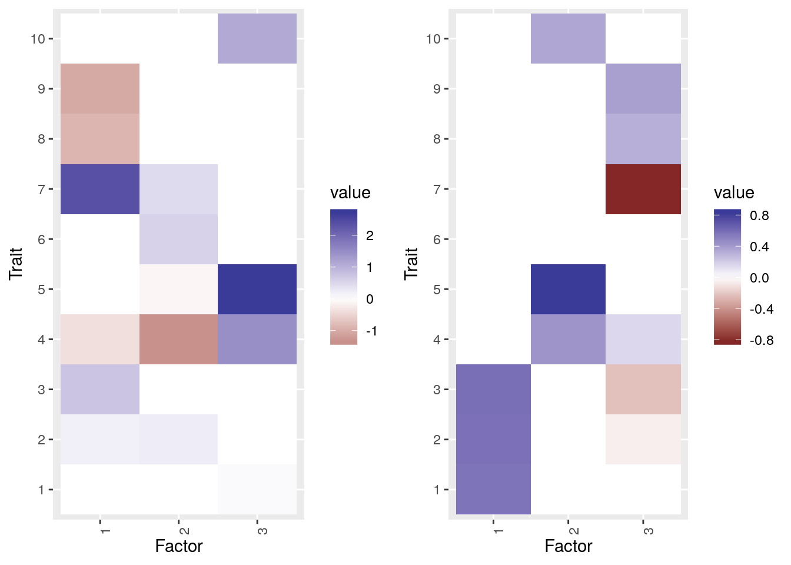
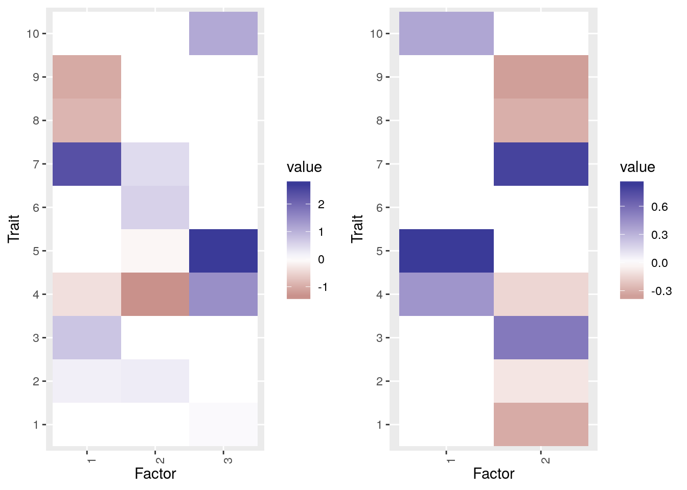
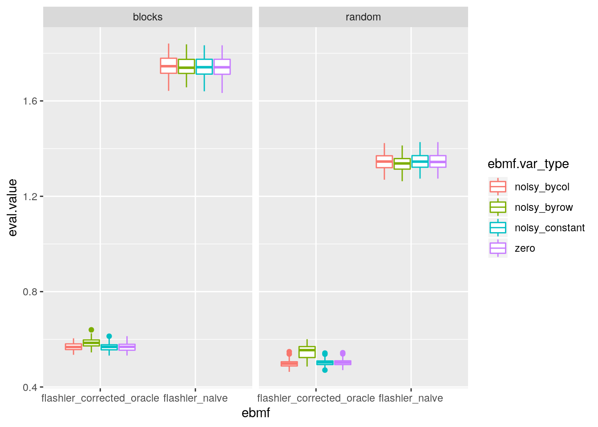

Correcting for sample overlap
Jean Morrison
2020-02-24
Last updated: 2020-02-28
Checks: 7 0
Knit directory: sumstatFactors/
This reproducible R Markdown analysis was created with workflowr (version 1.4.0.9000). The Checks tab describes the reproducibility checks that were applied when the results were created. The Past versions tab lists the development history.
Great! Since the R Markdown file has been committed to the Git repository, you know the exact version of the code that produced these results.
Great job! The global environment was empty. Objects defined in the global environment can affect the analysis in your R Markdown file in unknown ways. For reproduciblity it’s best to always run the code in an empty environment.
The command set.seed(20190819) was run prior to running the code in the R Markdown file. Setting a seed ensures that any results that rely on randomness, e.g. subsampling or permutations, are reproducible.
Great job! Recording the operating system, R version, and package versions is critical for reproducibility.
Nice! There were no cached chunks for this analysis, so you can be confident that you successfully produced the results during this run.
Great job! Using relative paths to the files within your workflowr project makes it easier to run your code on other machines.
Great! You are using Git for version control. Tracking code development and connecting the code version to the results is critical for reproducibility. The version displayed above was the version of the Git repository at the time these results were generated.
Note that you need to be careful to ensure that all relevant files for the analysis have been committed to Git prior to generating the results (you can use wflow_publish or wflow_git_commit). workflowr only checks the R Markdown file, but you know if there are other scripts or data files that it depends on. Below is the status of the Git repository when the results were generated:
Ignored files:
Ignored: .Rhistory
Ignored: .Rproj.user/
Ignored: analysis/fixed_factors_cache/
Ignored: analysis/metabo_flash_experiments_cache/
Ignored: analysis/pathway_factors_cache/
Ignored: analysis/simulations_cache/
Untracked files:
Untracked: analysis/genetic_correlation.Rmd
Untracked: buttons.css
Untracked: code/flashier_compare.R
Untracked: code/flashier_compare_jason.R
Untracked: code/hide_output.js
Untracked: code/mask_flashier.R
Untracked: code/mask_flashr.R
Untracked: k99_analysis.R
Untracked: k99_fit.RDS
Unstaged changes:
Modified: README.md
Note that any generated files, e.g. HTML, png, CSS, etc., are not included in this status report because it is ok for generated content to have uncommitted changes.
These are the previous versions of the R Markdown and HTML files. If you’ve configured a remote Git repository (see ?wflow_git_remote), click on the hyperlinks in the table below to view them.
| File | Version | Author | Date | Message |
|---|---|---|---|---|
| Rmd | 726dd7e | Jean Morrison | 2020-02-29 | wflow_publish(files = c(“analysis/simulations2.rmd”)) |
| Rmd | 91de03c | Jean Morrison | 2020-02-26 | new simulations – sample overlap |
Introduction
If many phenotypes are measured in the same sample or there is partial overlap between studies, there can be correlation in effect estimates that occurs as a result of sample phenotypic correlation rather than correlation in effect size. We would like to correct for this. This correlation occurs in all effect estimates, so it can be estimated using variants that are unlikely to affect any of the phenotypes. We can use this estimate to transform the matrix of effect estimates. To refresh notation, \(J\) = number of variants, \(M\) = number of traits, \(K\) = number of hidden factors
Write the decomposition as
\[ \hat{B}_{J\times M} = L_{K \times J}^{T}F_{K\times M} + \Theta_{J\times M} + E_{J\times M} \]
\(\Theta\) represents effects of variants on traits not mediated by factors. We assume these are independent and from some unknown distribution. \(E\) is the matrix that we are thinking about in this document. This is the estimation error. If each phenotype is measured in a different sample then the elements of \(E\), \(e_{j,m}\) are indepent and \(e_{i,j} \sim N(0, s_{j,m}^2)\) where \(s_{j,m}\) is the estimated variance of \(\hat{B}_{j,m}\) available in the GWAS. However, if samples overlap, these are not independent and \[ Cov(E_{j, \cdot}) = \Sigma_{j (M\times M)} = S_{j}RS_{j} \] where \(R\) is a correlation matrix that can be estimated as described above and \(S_j\) is a diagonal matrix \(M\times M\) matrix with elements \(s_{j,m}\). We are assuming that elements in the same row of \(E\) are correlated but that elements in different rows are indendent (\(Cov(E_{j,m}, E_{j^\prime, m^\prime}) = 0\) if \(j \neq j^\prime\)).
It helps to write the relationship above for only one variant, \(i\), here also transposing for convenience.
\[ \hat{B}_{j (M\times 1)} = F_{(M\times K)}^{\top}L_{j (K\times 1)} + \Theta_{j} + E_j \]
If we assume that \(s_{j,m}\) can be decomposed as \(a_j b_m\) then things are a bit easier. This is a reasonable approximation if variant allele frequencies are the same/similar across traits and the GWAS sample size for a single trait is the same/similar across variants because we can assume that \(s_{j,m} \propto \frac{1}{N_m f_j(1-f_j)}\). In this case \(z\)-scores have the same low-rank structure as the effect sizes (up to a scaling of the columns of \(F\) and \(L\)) so we can write
\[ \hat{Z}_{j (M\times 1)} = \tilde{F}_{(M\times K)}^{\top}\tilde{L}_{j (K\times 1)} + \tilde{\Theta}_{j} + \tilde{E}_j \] where \(Cov(\tilde{E}_j) = R\). So now, with the eigen-decomposition of \(R = UDU^\top\), we can replace \(\hat{Z}\) with
\[ \tilde{Z} = \hat{Z}U \] giving \[ \tilde{Z} = L^T F U + \tilde{\Theta} U + \tilde{E}U \] where the elements of \(\tilde{E}U\) are independent with variance \(d_m\). We could also take \(\tilde{Z} = \hat{Z}_{J\times M} D^{-1/2} U\) to have elements of \(\tilde{E}D^{-1/2}U\) be iid stanard normal. One issue here is that we will end up estimating \(FU\) rather than \(F\) but it is possible that \(FU\) is not sparse. We also now have \(\tilde{\Theta}U\) which may have less structure thatn \(\tilde{\Theta}\).
Goals
My goals in this document are
- See how much correlation affects estimates of \(F\)
- Verify that the strategy above works for recovering \(F\) correctly using the oracle value of \(R\).
- See how well we do estimating \(R\) from non-effect variants.
Simulating Data with Correlation Due to Sample Overlap
The first set of simulations is the same setup as used previously but now with \(R\). We have 1000 variants, 10, traits and 3 hidden factors. \(\Theta = 0_{M\times M}\) and \(S = 1_{M\times M}\).
library(flashier)
library(sumstatFactors)
library(tidyverse)
library(reshape2)
library(gridExtra)set.seed(1)
nvar <- 1000
ntrait <- 10
nfactor <- 3
S <- matrix(1, nrow=nvar, ncol=ntrait)
rloadings <- function(n){
sigma_1 <- 1
p <- 0.5
load_dist <- ashr::normalmix(pi=c(1-p, p), mean=rep(0, 2), sd=c(0, sigma_1))
return(causeSims::rnormalmix(n, load_dist))
}
rfactors <- function(n){
sigma_1 <- 1
p <- 0.5
fact_dist <- ashr::normalmix(pi=c(1-p, p), mean=rep(0, 2), sd=c(0, sigma_1))
return(causeSims::rnormalmix(n, fact_dist))
}
true_L <- replicate(n=nfactor, rloadings(nvar))
true_F <- replicate(n=nfactor, rfactors(ntrait))
true_Theta <- matrix(0, nrow=nvar, ncol=ntrait)
## Generate random correlation matrix
A <- matrix(rnorm(n=ntrait*ntrait), nrow=ntrait)
B <- A%*%t(A)
R <- cov2cor(B)
mats <- sim_bh2(true_L, true_F, true_Theta, S, R)
true_B = true_L%*%t(true_F)
### Plot the factors
ptrue <- plot_factors(true_F, 1:10)
ptrue
Try to recover factors without accounting for correlation
#fit_naive <- run_flashier(mats, var_type="zero", init_type="soft_impute")
fit_naive <- run_flashier(mats, var_type="noisy_byrow", init_type="soft_impute")Initializing flash object...
Adding factor 1 to flash object...
Adding factor 2 to flash object...
Adding factor 3 to flash object...
Adding factor 4 to flash object...
Adding factor 5 to flash object...
Factor doesn't significantly increase objective and won't be added.
Backfitting 4 factors (tolerance: 1.00e-02)...
Difference between iterations is within 1.0e+01...
Difference between iterations is within 1.0e+00...
Difference between iterations is within 1.0e-01...
Difference between iterations is within 1.0e-02...
Nullchecking 4 factors...
Wrapping up...
Done.p2 <- plot_factors(fit_naive$loadings.pm[[2]], 1:10)
grid.arrange(ptrue, p2, ncol=2)
gao_stability_sparse(mats$true_F, fit_naive$loadings.pm[[2]])[1] 0.3677522rrmse(Bhat = fitted(fit_naive), B = true_B)[1] 0.558579This is actually not bad. Now with correction.
R_eig <- eigen(R)
#U <- R_eig$vectors
U <- R_eig$vectors %*% diag(1/sqrt(R_eig$values))
mats$beta_hat <- mats$beta_hat %*% U
#mats$se_hat <- matrix(rep(sqrt(R_eig$values), nvar), nrow=nvar, byrow=T)
#fit_corrected <- run_flashier(mats, var_type="zero", init_type="soft_impute")
fit_corrected <- run_flashier(mats, var_type="noisy_byrow", init_type="soft_impute")Initializing flash object...
Adding factor 1 to flash object...
Adding factor 2 to flash object...
Adding factor 3 to flash object...
Adding factor 4 to flash object...
Factor doesn't significantly increase objective and won't be added.
Backfitting 3 factors (tolerance: 1.00e-02)...
Difference between iterations is within 1.0e+02...
Difference between iterations is within 1.0e+01...
Difference between iterations is within 1.0e+00...
Difference between iterations is within 1.0e-01...
Difference between iterations is within 1.0e-02...
Nullchecking 3 factors...
Wrapping up...
Done.p3 <- plot_factors(U%*%fit_corrected$loadings.pm[[2]], 1:10)
grid.arrange(ptrue, p3, ncol=2)
gao_stability_sparse(mats$true_F, U %*% fit_corrected$loadings.pm[[2]])[1] 0.1518444rrmse(Bhat = fitted(fit_corrected)%*%solve(U), B = true_B)[1] 0.1386082grid.arrange(ptrue, p2, p3)
We may get more distortion if \(R\) has blocks of correlated traits rather than being random. Lets try with one group of three and one group of 4 highly correlated phenotypes
R1 <- matrix(0.7, nrow=3, ncol=3)
diag(R1) <- 1
R2 <- matrix(0., nrow=4, ncol=4)
diag(R2) <- 1
R3 <- diag(rep(1, 3))
R <- Matrix::bdiag(R1, R2, R3) %>% as.matrix()
mats <- sim_bh2(true_L, true_F, true_Theta, S, R)#fit_naive <- run_flashier(mats, var_type="zero", init_type="soft_impute")
fit_naive <- run_flashier(mats, var_type="noisy_byrow", init_type="soft_impute")Initializing flash object...
Adding factor 1 to flash object...
Adding factor 2 to flash object...
Adding factor 3 to flash object...
Adding factor 4 to flash object...
Adding factor 5 to flash object...
Factor doesn't significantly increase objective and won't be added.
Backfitting 4 factors (tolerance: 1.00e-02)...
Difference between iterations is within 1.0e+01...
Difference between iterations is within 1.0e+00...
Difference between iterations is within 1.0e-01...
Difference between iterations is within 1.0e-02...
Nullchecking 4 factors...
Wrapping up...
Done.p2 <- plot_factors(fit_naive$loadings.pm[[2]], 1:10)
grid.arrange(ptrue, p2, ncol=2)
gao_stability_sparse(mats$true_F, fit_naive$loadings.pm[[2]])[1] 0.4888774rrmse(Bhat = fitted(fit_naive), B = true_B)[1] 0.4681092R_eig <- eigen(R)
#U <- R_eig$vectors
U <- R_eig$vectors %*% diag(1/sqrt(R_eig$values))
mats$beta_hat <- mats$beta_hat %*% U
#mats$se_hat <- matrix(rep(sqrt(R_eig$values), nvar), nrow=nvar, byrow=T)
#fit_corrected <- run_flashier(mats, var_type="zero", init_type="soft_impute")
fit_corrected <- run_flashier(mats, var_type="noisy_byrow", init_type="soft_impute")Initializing flash object...
Adding factor 1 to flash object...
Adding factor 2 to flash object...
Adding factor 3 to flash object...
Factor doesn't significantly increase objective and won't be added.
Backfitting 2 factors (tolerance: 1.00e-02)...
Difference between iterations is within 1.0e+01...
Difference between iterations is within 1.0e+00...
Difference between iterations is within 1.0e-01...
Nullchecking 2 factors...
Wrapping up...
Done.p3 <- plot_factors(U%*%fit_corrected$loadings.pm[[2]], 1:10)
grid.arrange(ptrue, p3, ncol=2)
gao_stability_sparse(mats$true_F, U %*% fit_corrected$loadings.pm[[2]])[1] 0.2400804rrmse(Bhat = fitted(fit_corrected)%*%solve(U), B = true_B)[1] 0.4545426corr_f <- cbind(rep(c(1, 0), c(3, 7)), rep(c(0, 1, 0), c(3, 4, 3)),
rep(c(0, 1, 0), c(7, 1, 2)), rep(c(0, 1, 0), c(8, 1, 1)),
rep(c(0, 1), c(9, 1)))
gao_stability_sparse(corr_f, fit_naive$loadings.pm[[2]])[1] 0.2704442gao_stability_sparse(corr_f, U %*% fit_corrected$loadings.pm[[2]])[1] 0.08857475Without the correction, one of the factors represents the structure of the correlation matrix. With the correction, this goes away. However, the correction probably matters more when more null variants are included. This could be because nearly all of the variant included have some effect on at least one factor. Only 123 do not. We can see what is the effect of \(R\) when there are more null variants and then see what is the effect when we select based on \(p\)-value.
More Null Variants
I wil regenerate the loadings matrix for more variants but many of them have no effects on any factor. We will keep using the same block diagonal \(R\) matrix.
set.seed(2)
nvar <- 10000
rloadings <- function(n){
sigma_1 <- 1
p <- 0.1
load_dist <- ashr::normalmix(pi=c(1-p, p), mean=rep(0, 2), sd=c(0, sigma_1))
return(causeSims::rnormalmix(n, load_dist))
}
true_L <- replicate(n=nfactor, rloadings(nvar))
true_Theta <- matrix(0, nrow=nvar, ncol=ntrait)
S <- matrix(1, nrow=nvar, ncol=ntrait)
mats <- sim_bh2(true_L, true_F, true_Theta, S, R)
minp <- with(mats, apply(beta_hat/se_hat, 1, function(z){
p <- 2*pnorm(-abs(z))
min(p)
}))
true_B = true_L%*%t(true_F)#fit_naive <- run_flashier(mats, var_type="zero", init_type="soft_impute")
fit_naive <- run_flashier(mats, var_type="noisy_byrow", init_type="soft_impute")Initializing flash object...
Adding factor 1 to flash object...
Adding factor 2 to flash object...
Adding factor 3 to flash object...
Adding factor 4 to flash object...
Factor doesn't significantly increase objective and won't be added.
Backfitting 3 factors (tolerance: 1.00e-02)...
Difference between iterations is within 1.0e+01...
Difference between iterations is within 1.0e+00...
Difference between iterations is within 1.0e-01...
Difference between iterations is within 1.0e-02...
Nullchecking 3 factors...
Wrapping up...
Done.p2 <- plot_factors(fit_naive$loadings.pm[[2]], 1:10)
grid.arrange(ptrue, p2, ncol=2)
gao_stability_sparse(mats$true_F, fit_naive$loadings.pm[[2]])[1] 0.3718462rrmse(Bhat = fitted(fit_naive), B = true_B)[1] 0.8046032```
With many null SNPs we can see the effects of the sample correlation!
R_eig <- eigen(R)
#U <- R_eig$vectors
U <- R_eig$vectors %*% diag(1/sqrt(R_eig$values))
mats$beta_hat <- mats$beta_hat %*% U
#mats$se_hat <- matrix(rep(sqrt(R_eig$values), nvar), nrow=nvar, byrow=T)
#fit_corrected <- run_flashier(mats, var_type="zero", init_type="soft_impute")
fit_corrected <- run_flashier(mats, var_type="noisy_byrow", init_type="soft_impute")Initializing flash object...
Adding factor 1 to flash object...
Adding factor 2 to flash object...
Adding factor 3 to flash object...
Factor doesn't significantly increase objective and won't be added.
Backfitting 2 factors (tolerance: 1.00e-02)...
Difference between iterations is within 1.0e+00...
Difference between iterations is within 1.0e-01...
Nullchecking 2 factors...
Wrapping up...
Done.p3 <- plot_factors(U%*%fit_corrected$loadings.pm[[2]], 1:10)
grid.arrange(ptrue, p3, ncol=2)
gao_stability_sparse(mats$true_F, U %*% fit_corrected$loadings.pm[[2]])[1] 0.2395513rrmse(Bhat = fitted(fit_corrected)%*%solve(U), B = true_B)[1] 0.6240238```
The stability has gone down because we are missing a factor but importantly we no longer capture the factor that reflects the structure of the correlation matrix.
corr_f <- cbind(rep(c(1, 0), c(3, 7)), rep(c(0, 1, 0), c(3, 4, 3)),
rep(c(0, 1, 0), c(7, 1, 2)), rep(c(0, 1, 0), c(8, 1, 1)),
rep(c(0, 1), c(9, 1)))
gao_stability_sparse(corr_f, fit_naive$loadings.pm[[2]])[1] 0.2617244gao_stability_sparse(corr_f, U %*% fit_corrected$loadings.pm[[2]])[1] 0.08763488Simulations Results
I ran a larger set of simulations with the goal of demonstrating that the eigenvector correction works as well as comparing some variance types and assessing how well the elbo works for choosing the best variance type. In these simulations there are 20 traits and 5 factors. \(F\) is fixed in all simulations but \(L\) and \(E\) are random. \(\Theta = 0_{J\times M}\) and \(S = 1_{J\times M}\).
res <- readRDS("analysis_data/2020-02-28_two.RDS")RRMSE
res %>%
filter(eval=="rrmse" & simulate.which_R!="identity") %>%
ggplot(.) +
geom_boxplot(aes(y=eval.value, x=ebmf, group=paste0(ebmf, "-", ebmf.var_type),
col=ebmf.var_type)) +
facet_wrap(~simulate.which_R) ### Factor Recovery
res %>%
filter(eval=="factor_recovery" & simulate.which_R!="identity") %>%
ggplot(.) +
geom_boxplot(aes(y=eval.value, x=ebmf, group=paste0(ebmf, "-", ebmf.var_type, "-"),
col=ebmf.var_type)) +
facet_wrap(~eval.f*simulate.which_R)Warning: Removed 5 rows containing non-finite values (stat_boxplot).
How well does ELBO work for choosing the best variance?
r1 <- res %>%
filter(eval=="factor_recovery") %>%
group_by(ebmf.output.file) %>%
summarize(mean_factor_recovery = mean(eval.value)) %>%
ungroup()
r2 <- res %>%
filter(eval!="factor_recovery") %>%
select(-eval.f) %>%
spread(eval, eval.value) %>%
left_join(., r1) Joining, by = "ebmf.output.file"r2$rrmse <- r2$rrmse + rnorm(n=nrow(r2), 0, 1e-4)
r2$mean_factor_recovery <- r2$mean_factor_recovery + rnorm(n=nrow(r2), 0, 1e-4)
r3 <- r2 %>%
group_by(simulate.output.file, ebmf ) %>%
summarize(best_elbo = max(elbo),
best_rrmse = min(rrmse),
best_recovery=max(mean_factor_recovery)) %>%
left_join(r2, .) %>%
ungroup()Joining, by = c("simulate.output.file", "ebmf")b1 <- r3 %>%
filter(elbo==best_elbo) %>%
select(simulate.output.file, simulate.which_R, ebmf, ebmf.var_type) %>%
rename(elbo_var = ebmf.var_type)
b2 <- r3 %>%
filter(rrmse==best_rrmse) %>%
select(simulate.output.file, simulate.which_R, ebmf, ebmf.var_type) %>%
rename(rrmse_var = ebmf.var_type)
b3 <- r3 %>%
filter(mean_factor_recovery==best_recovery) %>%
select(simulate.output.file, simulate.which_R, ebmf, ebmf.var_type) %>%
rename(recovery_var = ebmf.var_type)
b <- left_join(b1, b2) %>% left_join(., b3)Joining, by = c("simulate.output.file", "simulate.which_R", "ebmf")Joining,
by = c("simulate.output.file", "simulate.which_R", "ebmf")with(b, table(elbo_var, rrmse_var)) rrmse_var
elbo_var noisy_bycol noisy_byrow noisy_constant zero
noisy_bycol 4 31 7 10
noisy_byrow 98 101 162 174
noisy_constant 1 3 1 1
zero 2 5 0 0with(b, table(elbo_var, recovery_var)) recovery_var
elbo_var noisy_bycol noisy_byrow noisy_constant zero
noisy_bycol 11 17 12 12
noisy_byrow 214 39 142 139
noisy_constant 1 2 1 2
zero 0 5 0 2
sessionInfo()R version 3.6.2 (2019-12-12)
Platform: x86_64-pc-linux-gnu (64-bit)
Running under: Ubuntu 18.04.4 LTS
Matrix products: default
BLAS: /usr/lib/x86_64-linux-gnu/openblas/libblas.so.3
LAPACK: /usr/lib/x86_64-linux-gnu/libopenblasp-r0.2.20.so
locale:
[1] LC_CTYPE=en_US.UTF-8 LC_NUMERIC=C
[3] LC_TIME=en_US.UTF-8 LC_COLLATE=en_US.UTF-8
[5] LC_MONETARY=en_US.UTF-8 LC_MESSAGES=en_US.UTF-8
[7] LC_PAPER=en_US.UTF-8 LC_NAME=C
[9] LC_ADDRESS=C LC_TELEPHONE=C
[11] LC_MEASUREMENT=en_US.UTF-8 LC_IDENTIFICATION=C
attached base packages:
[1] stats graphics grDevices utils datasets methods base
other attached packages:
[1] gridExtra_2.3 reshape2_1.4.3
[3] forcats_0.4.0 stringr_1.4.0
[5] dplyr_0.8.3 purrr_0.3.3
[7] readr_1.3.1 tidyr_1.0.0
[9] tibble_2.1.3 ggplot2_3.2.1
[11] tidyverse_1.2.1 sumstatFactors_0.0.0.9000
[13] flashier_0.1.16
loaded via a namespace (and not attached):
[1] colorspace_1.4-1 rjson_0.2.20
[3] rprojroot_1.3-2 fs_1.3.1
[5] rstudioapi_0.10 farver_2.0.1
[7] listenv_0.7.0 furrr_0.1.0
[9] fansi_0.4.0 lubridate_1.7.4
[11] xml2_1.2.2 codetools_0.2-16
[13] splines_3.6.2 pscl_1.5.2
[15] doParallel_1.0.15 robustbase_0.93-5
[17] knitr_1.24 zeallot_0.1.0
[19] jsonlite_1.6 workflowr_1.4.0.9000
[21] broom_0.5.2 ashr_2.2-39
[23] flashr_0.6-6 compiler_3.6.2
[25] httr_1.4.1 backports_1.1.5
[27] assertthat_0.2.1 RcppZiggurat_0.1.5
[29] Matrix_1.2-17 lazyeval_0.2.2
[31] survey_3.36 cli_2.0.0
[33] iterpc_0.4.1 htmltools_0.3.6
[35] tools_3.6.2 gmp_0.5-13.5
[37] gtable_0.3.0 glue_1.3.1
[39] Rcpp_1.0.3 softImpute_1.4
[41] cellranger_1.1.0 vctrs_0.2.0
[43] arrangements_1.1.5 nlme_3.1-141
[45] iterators_1.0.12 xfun_0.9
[47] globals_0.12.4 rvest_0.3.4
[49] lifecycle_0.1.0 future_1.14.0
[51] DEoptimR_1.0-8 MASS_7.3-51.4
[53] scales_1.1.0 hms_0.5.2
[55] causeSims_0.1.0 parallel_3.6.2
[57] yaml_2.2.0 loo_2.1.0
[59] stringi_1.4.3 SQUAREM_2017.10-1
[61] cause_0.3.0.0240 foreach_1.4.7
[63] RMySQL_0.10.17 truncnorm_1.0-8
[65] intervals_0.15.1 rlang_0.4.2
[67] pkgconfig_2.0.3 matrixStats_0.55.0
[69] ebnm_0.1-24 evaluate_0.14
[71] lattice_0.20-38 labeling_0.3
[73] htmlwidgets_1.3 tidyselect_0.2.5
[75] plyr_1.8.5 magrittr_1.5
[77] R6_2.4.1 gsmr_1.0.9
[79] generics_0.0.2 DBI_1.0.0
[81] pillar_1.4.2 haven_2.1.1
[83] whisker_0.4 withr_2.1.2
[85] survival_2.44-1.1 mixsqp_0.3-6
[87] modelr_0.1.5 crayon_1.3.4
[89] MRPRESSO_1.0 plotly_4.9.0
[91] rmarkdown_1.15 grid_3.6.2
[93] readxl_1.3.1 data.table_1.12.2
[95] MendelianRandomization_0.4.1 git2r_0.26.1
[97] digest_0.6.23 numDeriv_2016.8-1.1
[99] RcppParallel_4.4.4 munsell_0.5.0
[101] viridisLite_0.3.0 mitools_2.4